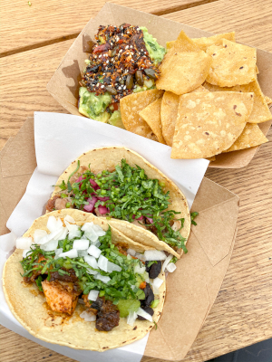
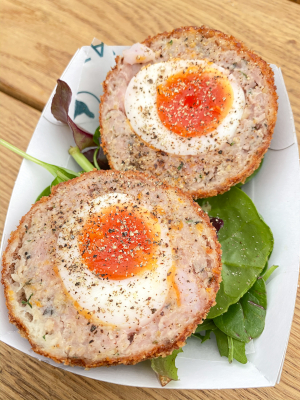
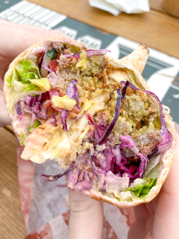
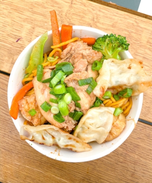
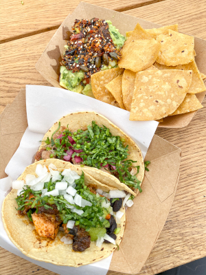
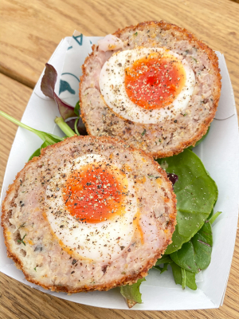
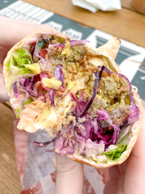
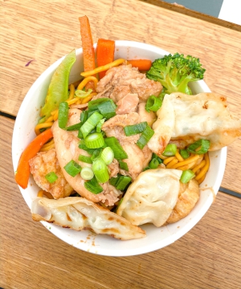

While studying abroad in London, I was obsessed with the abundance of street food and markets that are in and around London. These are the 6 that I visited while in London and I wish I had the opportunity to explore more! Maybe one day…
Borough Market
Borough Market has been serving the Southwark area since the 11th century. It is currently below the London Bridge and features a variety of artisan food businesses and produce markets open 6 days a week. Most days the market is only open until 5pm, and it is closed on Sunday’s. I visited many times while studying abroad in London. Whenever I visited, I got food from Tacos Padres and scotch eggs from one of the stands. When I visited with my boyfriend, we got a falafel wrap, chicken lo mein, and a pulled pork sandwich. All of my meals were out of this world! I also loved stopping by Cinnamon Tree Bakery each time for their vegan chocolate tahini brownies. I would definitely recommend stopping by this street food market for lunch one day, or every day!
 







Seven Dials Market
This market, open daily, is home to a range of delicious food from deli to seafood to doughnuts. The Seven Dials Market literally features a restaurant that has a cheese conveyor belt. There are also a variety of drinks at the bar. During my visit I got the bao buns, but each person in my group ordered from a different vendor and everyone enjoyed their meal! The market is located a short walk away from Covent Garden (my favorite area!), so if you are hungry from all of the shopping this is a good lunch or dinner spot!
Camden Market
Camden Market, located in Camden features over one thousand unique shops, stalls, bars and cafes. Originally starting with 16 stalls, Camden Market has a long history of trade, music and fashion. I visited twice during my time studying abroad in London, and it is a great change of scenery compared to other areas in London. There is also a ton to eat and drink in the surrounding area so between the market, shops and town, it makes for a great spot to visit!
Mercato Mayfair
Located in a refurbished church, Mercato Mayfair features two levels of food stalls and bars with a rooftop terrace and basement wine cellar. While there I ate from Fresco, Pasta London, and Badiani. The pizza was out of this world with sausage and artichokes, and the pasta was made from scratch and topped with burrata. To finish dinner off, I had creamy chocolate hazelnut gelato. I cannot recommend all of these places enough and the vibe was fun! There was music playing and delicious drinks available at the bars. I highly recommend coming here!
Southbank Centre
After getting stuck in the rain, Southbank Centre was a bright spot in my day! There is a variety of food to fulfill any craving you are having. I got an arancini ball with rice, peas, cheese and ground beef and then I satisfied my sweet tooth with chocolate covered banana, strawberry and marshmallow. The market is open from Friday to Sunday and is conveniently located near the London Eye and is right across the River Thames from Central London.
Boxpark Shoreditch
Boxpark Shoreditch is a popular spot in Shoreditch with street food, drinks and shopping with communal seating. It’s also located in the fun and booming area of Shoreditch, which has a great nightlife and quirky shops. Most of the food vendors are located upstairs, which is partially open and airy, and the ground level features small shops and additional food spots in “boxes”. I visited Boxpark countless times as it’s the perfect place and area to grab a drink and lunch or dinner. I love the variety of food they have and I tried many of their vendors so I can say that they are all amazing! Boxpark is a must visit to satisfy all of your street food and nightlife cravings.
Thanks for reading my review on London street food markets! Let me know in the comments your favorite street food or if you’ve ever been to any of these spots!